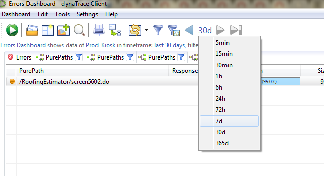
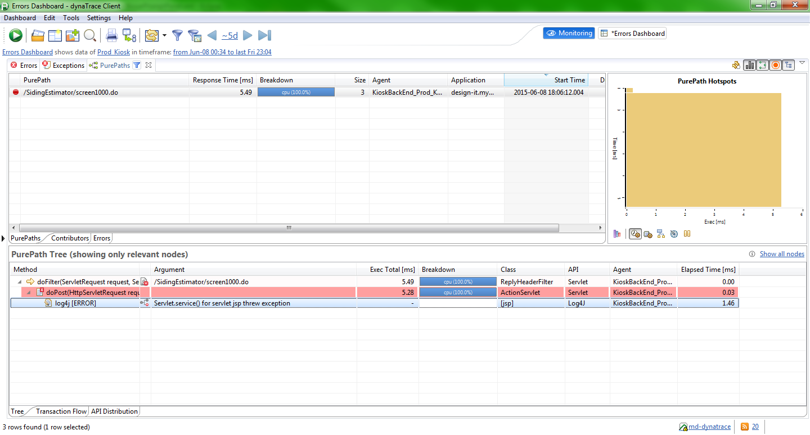

DynaTrace
A software we use for detecting SLA performance. When we get an EAM about SLA, the assigned person of the week who is to take care of the SLA EAM tickets, will drill down to dynatrace to help them debug where the SLA issue is occurring in what app. Dynatrace is one of the tools we use, but you can also use True Sight.
Installing Dynatrace
Unlike true sight, To get access, you need to install it on your machine. Ask team lead or another team member who has used it before how to install and use it.
Usage
DynaTrace is really good at tracking down 500 errors. In the EAM ticket, there will be a quick note on whether it is 500 errors, huge files, or performance.
Try using Dyna Trace to look for errors based on last week (Mon to Sat). Errors and Exceptions should help.

In this case, this 500 error eception doesn't show anything useful

Getting started
- on launch you will have to specify a connection: type:default, host:md-dynatrace, 2021, user and pass is active directory > ok
- A welcome window like eclpise will pop up, close it
- hover mouse to far left and you get a pop up
- For web apps we are interested in System Profiles > prod kiosk
- Under prod kiosk three things: Diagnos Performance, Diagnos Events, Diagnos Runtime
- Diagnos Events: erros and exceptions are the 500 errors we can look at
- Click Errors and you will get a tab at the main window like a browser for every new click
- Filter the date to like a day or two ago or a week, the narrow the search the less result you see
- select once a error you see below the errors
- right click on one of the errors > drill down > purpaths to get a new window tab an see the more specific errors and calls
- If it is a siding issue, you will see the name in the likes of siding
- You get another tab to see more info on